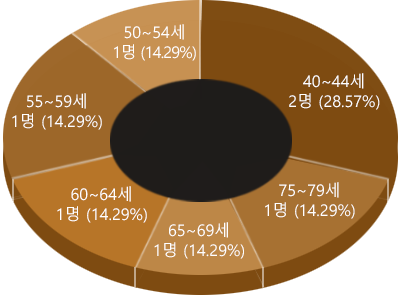

"홀로 생을 살아가던 사람이 사망 후 3일이 지난 뒤 발견된 죽음"으로 정의되는 고독사.
'무연사'라는 이름으로 일본 사회에 충격을 준 고독사 현상이 어느덧 한국에서도 나타나기 시작했다.
고령화, 1인 가구의 급증, 전통적 가족문화의 단절과 가족 해체, 그리고 빈곤층이 급증했기 때문이다.
누가 홀로 죽는가?
흔히 우리는 고독사를 홀몸으로 삶을 지탱하고 있는 독거노인의 문제로 여기는 경우가 많다.
경제적 부양책임을 다하지 못하고 가족과의 연결과 유대가 끊긴 50대 남성들.
그들은 사회적 삶에서 고립된 채 건강이 악화되고 홀로 죽음을 맞이했다.
50대 중장년층은 근로 연령층으로 여겨지면서
복지서비스의 초점은 영유아와 노년층에 집중되었다.
고독사를 예방하는 대책 역시 노인에게 맞춰졌을 뿐이다.
복지의 사각지대에 50대 층이 놓여 있었다.

